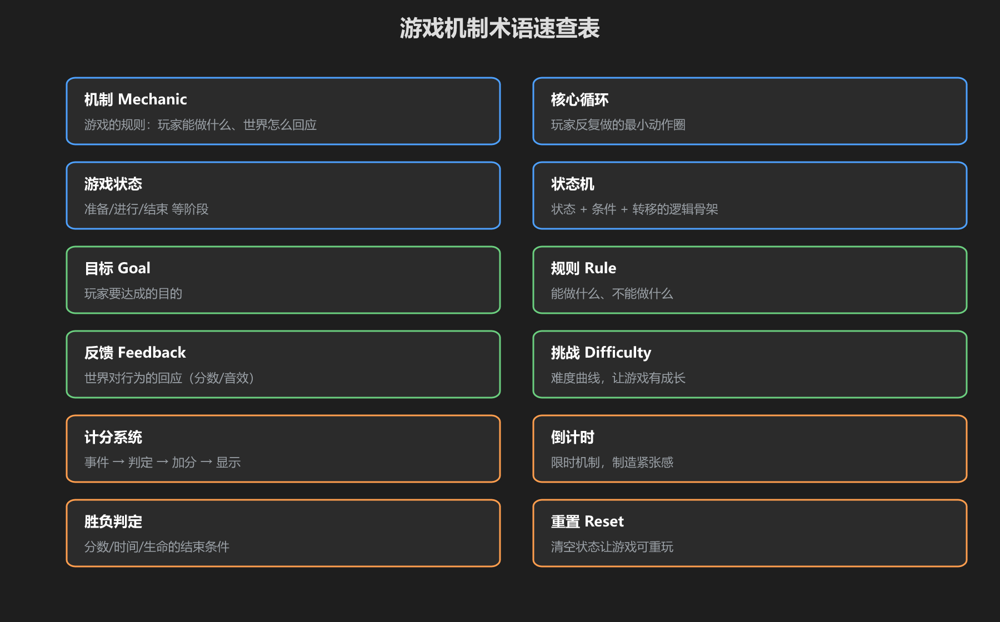
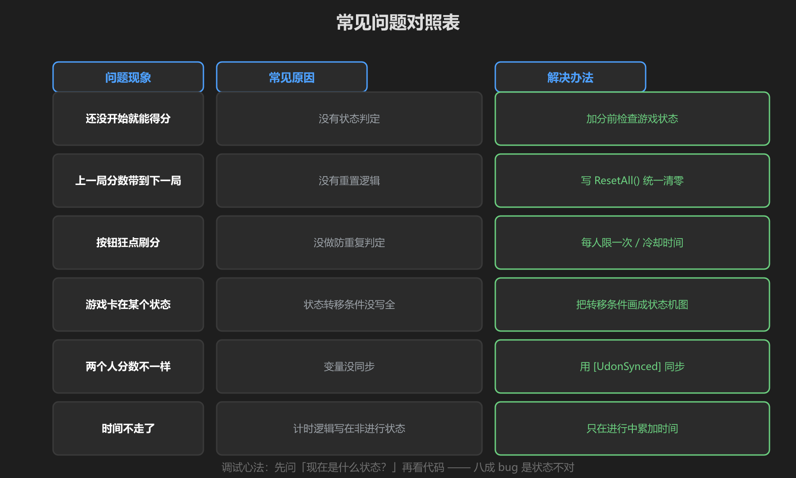
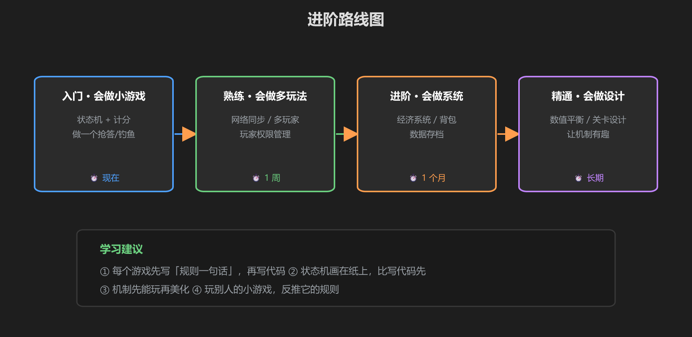

第 6 篇：速查表 & 常见问题
做完前五篇后，遇到问题先来这里翻。
1. 术语速查表

图：12 个必懂术语
| 术语 | 一句话解释 |
|---|---|
| 机制 Mechanic | 游戏的规则：玩家能做什么、世界怎么回应 |
| 核心循环 Core Loop | 玩家反复做的最小动作圈 |
| 游戏状态 | 准备 / 进行 / 结束 等阶段 |
| 状态机 | 状态 + 条件 + 转移的逻辑骨架 |
| 目标 Goal | 玩家要达成的目的 |
| 规则 Rule | 能做什么、不能做什么 |
| 反馈 Feedback | 世界对行为的回应（分数/音效） |
| 挑战 Difficulty | 难度曲线，让游戏有成长 |
| 计分系统 | 事件 → 判定 → 加分 → 显示 |
| 倒计时 | 限时机制，制造紧张感 |
| 胜负判定 | 分数/时间/生命的结束条件 |
| 重置 Reset | 清空状态让游戏可重玩 |
2. 常见问题对照表

图：现象 → 原因 → 解法
| 现象 | 原因 | 解法 |
|---|---|---|
| 还没开始就能得分 | 没有状态判定 | 加分前检查 IsPlaying() |
| 上一局分数带到下一局 | 没有重置逻辑 | 写 ResetAll() 统一清零 |
| 按钮狂点刷分 | 没做防重复 | 每人限一次 / 冷却时间 |
| 游戏卡在某状态 | 转移条件没写全 | 把状态机画成图检查 |
| 两个人分数不一样 | 变量没同步 | 用 [UdonSynced] 同步 |
| 时间不走了 | 计时写在非 Playing 状态 | 只在进行中累加时间 |
3. 进阶路线图

图：入门 → 熟练 → 进阶 → 精通
| 阶段 | 目标 | 学习内容 |
|---|---|---|
| 入门 | 会做小游戏 | 本教程：状态机 + 计分 + 胜负 |
| 熟练 | 会做多玩法 | 网络同步、多玩家、权限管理 |
| 进阶 | 会做系统 | 经济系统、背包、数据存档 |
| 精通 | 会做设计 | 数值平衡、关卡设计、让机制有趣 |
最后的话：游戏机制是"规则 + 实验"的学问：写一句话规则 → 做出来 → 玩 → 改规则 → 再玩。机制通了你再谈画面和音效。